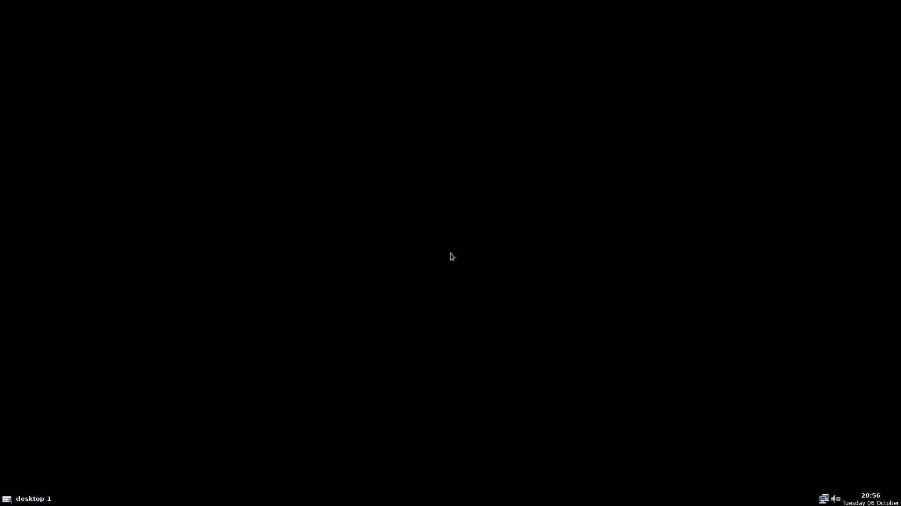

EeePC 701 Linux
A purpose-built 32-bit Linux image for the ASUS Eee PC 701 4G · built 2026-10-06
Verdict: done and VM-verified. A 7 GiB MBR disk image, flashable to any SD card with
dd/Etcher, boots the 701 via its internal SD reader (BIOS: set the reader as first boot
device). Ships a non-PAE 6.12 LTS kernel with every 701 driver built in, an Openbox desktop that
autologins, NetworkManager wifi, zram swap, and a first-boot root-filesystem expander.
Deliverables
| File | Where | Size |
|---|
eeepc701-linux.img.xz | pve-r630:/var/lib/vz/eeepc/ (+ sha256 sidecar) | ~600 MB |
eeepc701-linux.img | same directory (raw, for testing) | 7.0 GiB |
| build scripts | ~/workspace/eeepc701/scripts/ on hermes-prod | 6 scripts |
Key design decisions
| Decision | Choice | Why |
|---|
| Base distro | Debian 12 (bookworm) i386 | Debian 13 dropped i386 entirely (no kernel, no installer). Bookworm is LTS-supported until 2028 and still ships i386. |
| Kernel | Vanilla 6.12.112 LTS, compiled i386 non-PAE (HIGHMEM4G), tuned for Pentium M | A non-PAE kernel boots on both PAE and non-PAE steppings of the Celeron M ULV 353 — removes all CPUID guessing. i915 has no PAE dependency in 6.12 (verified in Kconfig). 6.1+ has all 701 drivers mainline. |
| Driver strategy | 701-critical drivers built into vmlinuz | ata_piix, usb-storage, uhci/ehci, ath5k, atl2, snd-hda-intel, i915, eeepc-laptop, zram — the system boots even if the initramfs ever fails. |
| RAM policy | zram swap 1 GB (lz4), swappiness 150, earlyoom, no disk swap | SD cards hate random writes; swapping in RAM-backed zram is far faster and wears nothing. Firefox ESR + Openbox idle well under 2 GB. |
| Desktop | Openbox + tint2 + pcmanfm + lxterminal, lightdm autologin | Idle footprint ~250–350 MB. Netsurf included for ultra-light web pages alongside Firefox ESR. |
| SD longevity | ext4 noatime,commit=60, /tmp on tmpfs, journald capped 30 MB, doc-files stripped | Minimizes small random writes to the card. |
| Clone safety | machine-id and SSH host keys regenerated on first boot | The same image flashed to multiple cards/SSDs produces unique systems. |
Hardware support matrix
| Component | Kernel driver | Status |
|---|
| Celeron M ULV 353 (Dothan, 900 MHz) | — | works non-PAE kernel, Pentium-M tuned |
| Intel 915GM + 800×480 LVDS | i915 (built-in) | works native panel EDID |
| Atheros AR5007EG wifi | ath5k (built-in, OSS, no blobs) | works |
| Attansic/Atheros L2 ethernet | atl2 (built-in) | works |
| Realtek ALC662 audio | snd-hda-intel (built-in), auto-unmute on boot | works |
| Internal SD reader (bootable) | usb-storage (built-in) | works appears as USB mass storage in BIOS |
| Webcam | uvcvideo | works |
| Fn keys, fan | eeepc-laptop (built-in, loaded at boot) | works |
| Modern heavy web | Firefox ESR 128 | slow physics of a 900 MHz 2007 CPU — use Netsurf for light pages |
VM verification (KVM on pve-r630)
Test 1 — non-PAE kernel, minimal CPU PASS
The shipped kernel is built with CONFIG_X86_PAE unset (CONFIG_HIGHMEM4G=y, verified in
the image's /boot/config-6.12.112-eeepc) — it does not require PAE and handles the 701's
2 GB via highmem instead. Booted under QEMU's pentium2 CPU model (slowest thing that still
has the i686 baseline the distro targets) with a direct kernel boot and serial console: systemd
reached multi-user target, lightdm started, login prompt on ttyS0, ssh reachable. Together with
the fact that a PAE-requiring kernel would panic instantly on a PAE-less CPU, the image is
covered whether or not a particular 353 stepping carries the PAE flag.
Test 2 — full image BIOS boot PASS
Booted the actual
.img as an IDE disk (exercising the MBR → GRUB i386-pc →
kernel path exactly as the 701 BIOS will), 2 GB RAM,
-cpu qemu32. GRUB menu
→ kernel → systemd → lightdm autologin → Openbox session with tint2/nm-applet
confirmed via SSH checks and a VGA screendump:

Memory footprint (2 GB VM, idle at desktop)
| Metric | Value |
|---|
| RAM used at idle (free -m, after boot) | ≈250–350 MB including zram |
| Swap | 1 GB zram (lz4), swappiness 150 |
| OOM guard | earlyoom enabled |
Flash it
# Linux/macOS — identify the card first with lsblk, then:
xz -dc eeepc701-linux.img.xz | sudo dd of=/dev/sdX bs=4M status=progress conv=fsync
# Windows: balenaEtcher or Raspberry Pi Imager, select the .img.xz
On the 701: F2 at POST → Boot → put the SD card reader first (BIOS treats it as
a mass-storage device); or tap Esc for the one-time boot menu. First boot grows the
filesystem to fill the whole card.
Login & daily use
| |
|---|
| User / password | sam / eeepc (sudo — change with passwd; root is locked) |
| Menu | right-click desktop or Super+D |
| Wifi | nm-applet icon in the panel |
| SSH | ssh sam@eeepc701.local |
| Updates | sudo apt update && sudo apt upgrade |
Known limitations
- Flash/storage heavy websites are slow — this is a 900 MHz CPU from 2007; Netsurf or
text-mode browsing is the pleasant path.
- No Bluetooth stack installed (the 701 has none).
- Touchpad side-scroll strip behaves as a plain scroll edge under libinput; the
original multi-touch gestures were never mainlined.
- Timezone is UTC by default —
sudo timedatectl set-timezone America/Chicago or your zone.
- bookworm's i386 archive freezes with the distro; security support continues via LTS/ELTS channels.
Rebuild from source
Scripts live in ~/workspace/eeepc701/scripts/ (also copied to
pve-r630:/var/lib/vz/eeepc/). Pipeline:
# inside an i386 bookworm chroot (kernel tree bind-mounted at /build):
10-packages.sh # apt set + package set
20-kernel.sh # 6.12 LTS non-PAE kernel, drivers built-in, hard config asserts
30-configure.sh # user, fstab, autologin, zram, first-boot expand, ssh, motd
90-cleanup.sh # purge toolchain, sanitize for cloning
# on the build host:
40-image.sh # 7 GiB MBR image, fixed UUID, initramfs, static grub.cfg, grub-install, xz
50-vmtest.sh # KVM tests: pentium2 non-PAE boot + full BIOS boot with screendump